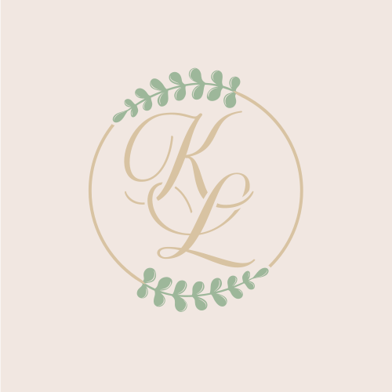
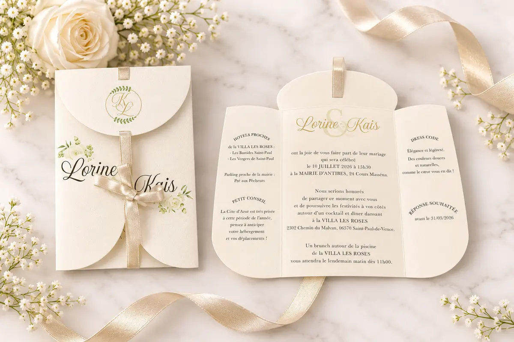
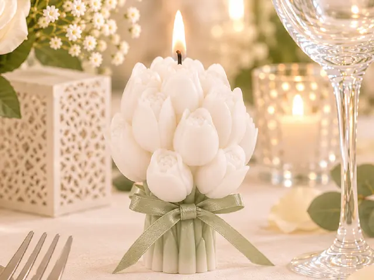

Ils m'ont fait confiance
Identité visuelle · Papeterie de mariage
Kais & Lorine
Une identité, une histoire
Création d'une identité visuelle personnalisée pour célébrer l'union de Kais & Lorine. Un monogramme imaginé pour refléter leur univers et décliné sur l'ensemble de la papeterie du mariage : Save The Date, Faire-part, Cartons noms, Noms des tables, Plan des tables, Panneau de Bienvenue, Bougie sur mesure avec leurs étiquettes et Menus.
Supports
- Save The Date
- Faire-part
- Cartons noms
- Noms des tables
- Plan des tables
- Panneau de bienvenue
- Bougie sur mesure
- Menus
Visuels du projet






